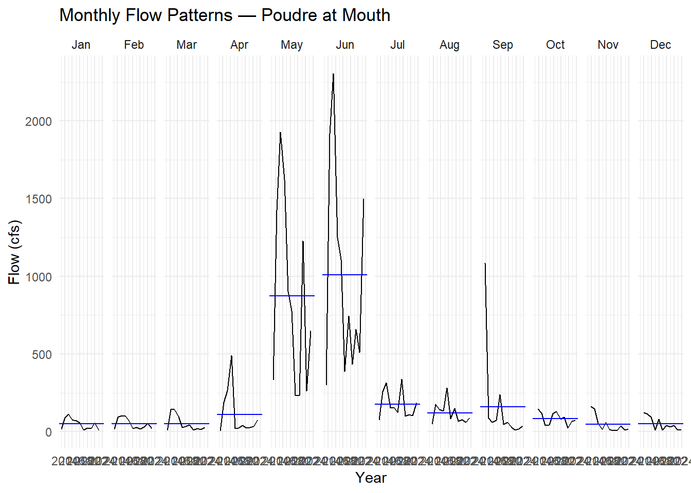
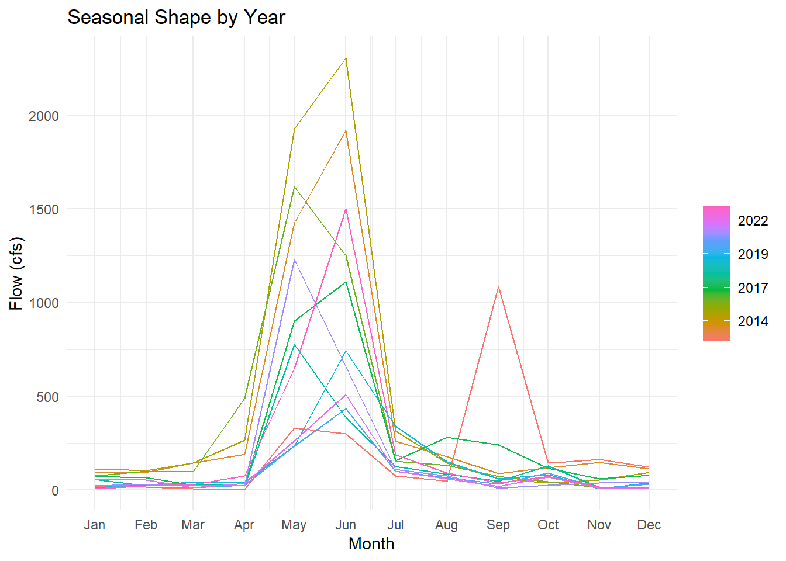
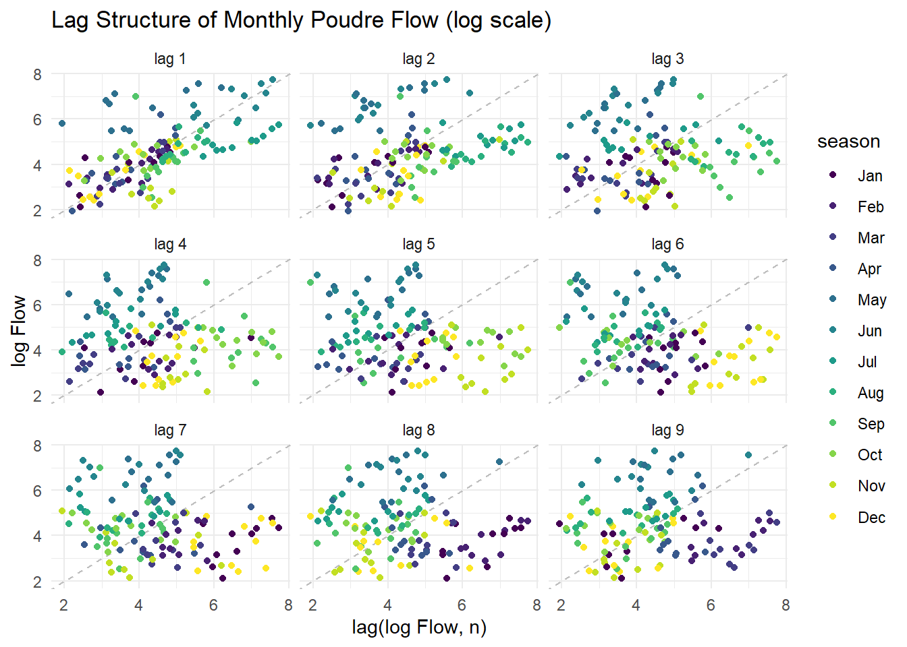
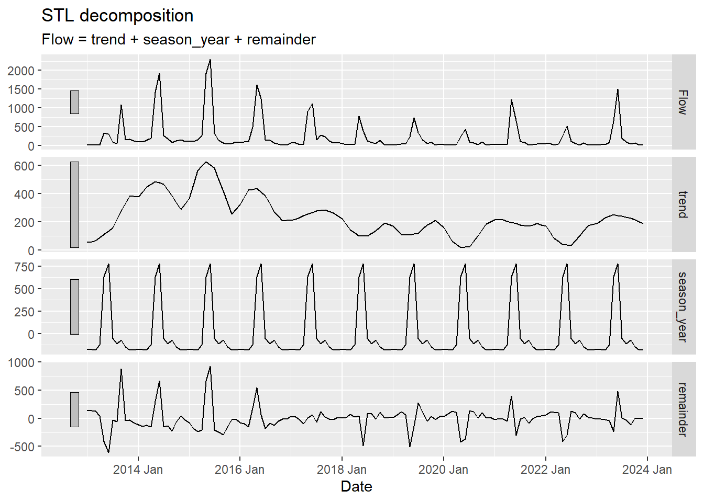
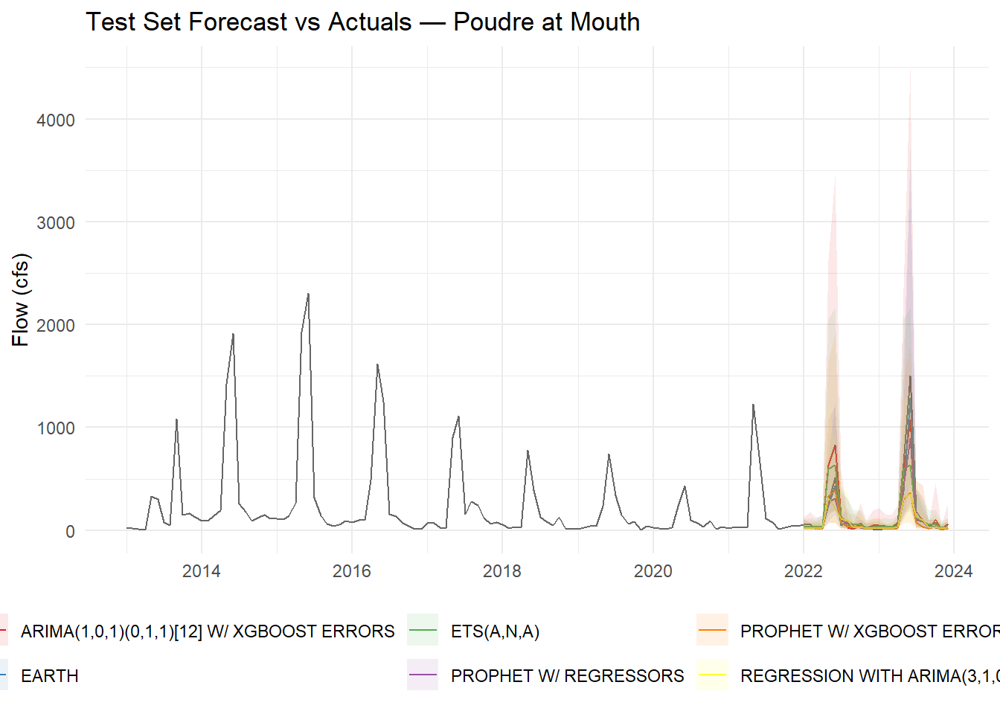
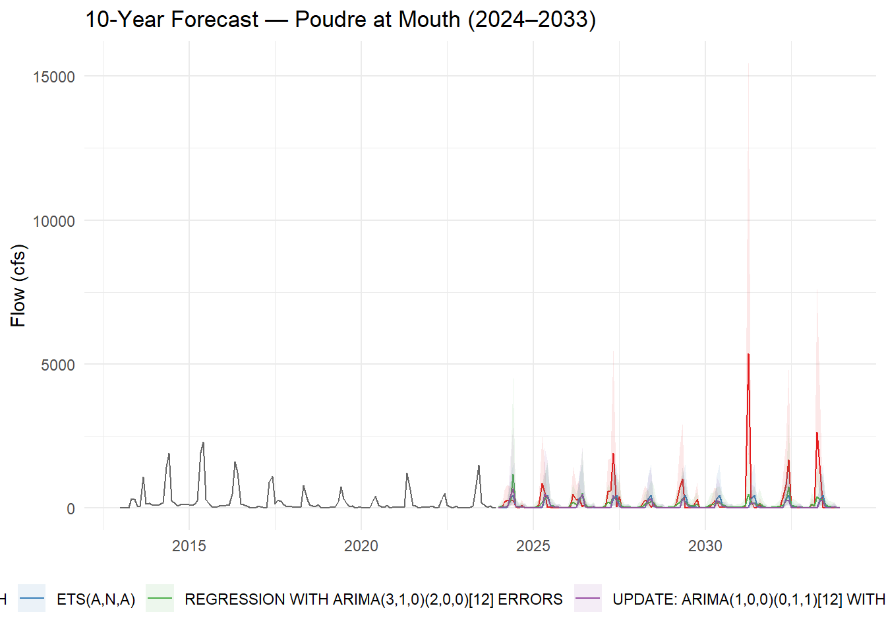

Lab 6: Timeseries Data
Using Modeltime to predict future streamflow on the Cache la Poudre River
Introduction
In this lab you will download streamflow data from the Cache la Poudre River (USGS site 06752260) and analyze it using the time series methods introduced in lecture. You will then use modeltime to predict future streamflow using both the time structure of the series and exogenous climate predictors.
This mirrors the Lees Ferry forecasting example from lecture — same dataRetrieval pipeline, same modeltime workflow, but now applied to a river you can see from campus. Like Lees Ferry, the Poudre is an operational water-supply system: Fort Collins, Loveland, and Greeley all depend on it, and the flows you forecast here directly inform how water managers plan deliveries.
Getting the Data
Streamflow
Download daily streamflow for the Poudre at Mouth (USGS 06752260) and aggregate to monthly means. This is the same readNWISdv() + renameNWISColumns() pipeline from Lab 1 — the only addition is yearmonth() from tsibble to create a monthly time index.
poudre_flow <- readNWISdv(
siteNumber = "06752260",
parameterCd = "00060",
startDate = "2013-01-01",
endDate = "2023-12-31"
) |>
renameNWISColumns() |>
mutate(Date = yearmonth(Date)) |>
group_by(Date) |>
summarise(Flow = mean(Flow))Historic Climate (GridMET)
We will use climateR::getTerraClim() to download monthly climate data for the Poudre basin (max temperature, precipitation, solar radiation). The exactextractr package spatially averages each raster layer over the basin polygon.
basin <- findNLDI(nwis = "06752260", find = "basin")
sdate <- as.Date("2013-01-01")
edate <- as.Date("2023-12-31")
gm <- getTerraClim(
AOI = basin$basin,
var = c("tmax", "ppt", "srad"),
startDate = sdate,
endDate = edate
) |>
unlist() |>
rast() |>
exact_extract(basin$basin, "mean", progress = FALSE)
historic <- mutate(gm, id = "gridmet") |>
pivot_longer(cols = -id) |>
mutate(name = sub("^mean\\.", "", name)) |>
tidyr::extract(name, into = c("var", "index"), "(.*)_([^_]+$)") |>
mutate(index = as.integer(index)) |>
mutate(Date = yearmonth(seq.Date(sdate, edate, by = "month")[as.numeric(index)])) |>
pivot_wider(id_cols = Date, names_from = var, values_from = value) |>
right_join(poudre_flow, by = "Date")
# Validate: should have 132 rows (11 years × 12 months). If fewer, climate data
# is missing for some months and those flow months were silently dropped.
stopifnot("Climate join dropped flow months — check GridMET download" = nrow(historic) == 132)Future Climate (MACA)
Any time exogenous predictors are used for forecasting, future values of those predictors must also be available. We use MACA — a statistically downscaled climate dataset developed by the same group as GridMET — to get projected temperature, precipitation, and solar radiation through 2033.
Two differences from GridMET: temperature is in Kelvin (subtract 273.15 for °C) and variable names differ slightly.
sdate <- as.Date("2024-01-01")
edate <- as.Date("2033-12-31")
maca <- getMACA(
AOI = basin$basin,
var = c("tasmax", "pr", "rsds"),
timeRes = "month",
startDate = sdate,
endDate = edate
) |>
unlist() |>
rast() |>
exact_extract(basin$basin, "mean", progress = FALSE)
future <- mutate(maca, id = "maca") |>
pivot_longer(cols = -id) |>
mutate(name = sub("^mean\\.", "", name)) |>
tidyr::extract(name, into = c("var", "index"), "(.*)_([^_]+$)") |>
mutate(index = as.integer(index)) |>
mutate(Date = yearmonth(seq.Date(sdate, edate, by = "month")[as.numeric(index)])) |>
pivot_wider(id_cols = Date, names_from = var, values_from = value)
# Rename the 3 climate columns to match GridMET names (Date column stays first)
stopifnot("Unexpected MACA column count" = ncol(future) == 4)
names(future)[2:4] <- c("ppt", "srad", "tmax") # order matches getMACA var request
future <- mutate(future, tmax = tmax - 273.15) # Kelvin → °CYour Turn
1. Convert to tsibble
Convert historic to a tsibble object using as_tsibble(). A tsibble is a tidy time series data frame — it retains the date index and integrates with feasts functions for decomposition and visualization. Think of it as a tibble that knows it is ordered in time.
Using `Date` as index variable.2. Plot the Time Series
Use ggplot to plot monthly Flow over time. Use plot_ly() from plotly for an interactive version — this lets you zoom into specific years or hover over values.
3. Seasonal Diagnostics
Before fitting any model, inspect the seasonal structure using two complementary feasts plots.
Subseries plot — one panel per month, each line is one year, the blue line is the monthly mean across all years:
Warning: `gg_subseries()` was deprecated in feasts 0.4.2.
ℹ Please use `ggtime::gg_subseries()` instead.
ℹ Graphics functions have been moved to the {ggtime} package. Please use
`library(ggtime)` instead.
Seasonal plot — each line is one year plotted over the calendar cycle. Parallel lines = stable seasonal shape; diverging lines = changing pattern:

Describe what you see. How are “seasons” defined in these plots? Is the seasonal shape consistent across years, or does it change? What physical process drives the May–June peak?
Seasons are defined by months in this plot, along with how much flow is occurring at those times. The seasonal shape is consistent across the winter and fall months, but starts to change across spring and summer months. The May-June peak flow is primarily driven by snow melt at higher altitudes.
4. Stationarity and Autocorrelation
Two diagnostics that directly inform ARIMA model selection:
Lag plot — plots Flow against its own lagged values. Strong linear patterns = high autocorrelation (ARIMA has something to work with). A diffuse cloud = no memory. Use log1p(Flow) — on the raw scale, peak months compress all other observations into the corner and hide the structure.
This has weak linear patterns and is more cloud-like in structure.

Stationarity tests — ARIMA requires a stationary series (constant mean and variance). Stationary means that the statistical properties don’t change over time (mean, variance). Test formally before fitting:
Warning in adf.test(log_flow_vec): p-value smaller than printed p-value
Augmented Dickey-Fuller Test
data: log_flow_vec
Dickey-Fuller = -7.3292, Lag order = 5, p-value = 0.01
alternative hypothesis: stationary
KPSS Test for Level Stationarity
data: log_flow_vec
KPSS Level = 0.50753, Truncation lag parameter = 4, p-value = 0.03997What do the tests tell you? If the series is non-stationary, ARIMA will need d ≥ 1 (differencing). Does the lag plot support the same conclusion?
We reject the null hypothesis, that the flow is non-stationary (ADF), although it looks to be non-stationary. However, the KPSS test shows that that the flow is barely non-stationary (pvalue=.04), so we cannot reject the null hypothesis that it is stationary.
5. Decomposition
Use model(STL(...)) to decompose the time series into trend, seasonality, and remainder. Choose a trend window size you feel is appropriate and justify your choice. Extract components with components() and visualize with autoplot().

Describe what you see:
- What does the trend tell you about long-term changes in Poudre flow? Is there evidence of a decline consistent with climate change or upstream demand?
Compared to 2013, the flow has continually declined. However, May-June seasonal flows remains high. I believe there is evidence that the overall flow is changing due to climate change and upstream demand because we are seeing more periods of a negative remainder in recent times.
- What drives the seasonal component? (Hint: snowmelt, irrigation withdrawals, reservoir releases)
Snow/ snow melt and the agriculture season drive the seasonal component in flow rates.
- Are there any spikes in the remainder that correspond to anomalous years you can identify?
Yes, there are spikes that correspond with anomomalous years in 2014, 2015, 2016, 2021, and 2023.
Modeltime Prediction
Data Preparation
Convert the historic tsibble and future tibble to plain tibbles with a Date column for modeltime. All predictor columns must be present in both the historic and future datasets — this is what enables the 10-year climate-driven forecast.
Streamflow is strictly non-negative but right-skewed — snowmelt peaks dwarf base-flow months. To prevent models from predicting negative flows, add a log-transformed response with log1p(Flow) (log(Flow + 1), safe when flow is near zero). Fit all models on log_flow; back-transform predictions with expm1() (= exp(x) - 1) to return to cfs units.
pf_tbl <- pf |>
as_tibble() |>
mutate(date = as.Date(Date),
log_flow = log1p(Flow),
Date = NULL)
future_tbl <- future |>
as_tibble() |>
mutate(date = as.Date(Date), Date = NULL)Train / Test Split
Hold out the last 24 months (2022–2023) as the test set. This mirrors the assess = "60 months" logic from the CO₂ and Lees Ferry examples — the test set is always the most recent data, never a random sample.
# Note: time_series_split() is deterministic — it always cuts at the same point
# regardless of the seed. set.seed() is kept here as a tidymodels convention
# (some resampling functions are random), but removing it gives identical results.
set.seed(10291991)
splits <- time_series_split(pf_tbl, assess = "24 months", cumulative = TRUE)
training <- training(splits)
testing <- testing(splits)Model Definition
Choose at least three models — one ARIMA and one Prophet are required. Store model specifications in a list:
The selected were chosen due to the non-linear seasonal trends, peaks, and non-linear cliamte responses.
mods <- list(
# Classical seasonal ARIMA — relies on stationarity (check your tests above)
arima_reg() |> set_engine("auto_arima"),
#ARIMA + XGBoost residual boosting — picks up nonlinear climate relationships
arima_boost() |> set_engine("auto_arima_xgboost"),
# Prophet — handles trend breaks, missing data, and multiple seasonalities
prophet_reg() |> set_engine("prophet"),
# Prophet + XGBoost — as above, but boosts on residuals
prophet_boost() |> set_engine("prophet_xgboost"),
# Exponential smoothing — strong baseline for multiplicative seasonal data
exp_smoothing() |> set_engine("ets"),
# MARS — nonparametric spline model, useful for nonlinear climate response
mars(mode = "regression") |> set_engine("earth")
)Model Fitting
Fit all models to the training data on the log scale. Exclude the raw Flow column so models only see log_flow as the response — each engine handles date and climate predictors internally.
models <- map(mods, ~ fit(.x, log_flow ~ ., data = select(training, -Flow)))
(models_tbl <- as_modeltime_table(models))# Modeltime Table
# A tibble: 6 × 3
.model_id .model .model_desc
<int> <list> <chr>
1 1 <fit[+]> REGRESSION WITH ARIMA(3,1,0)(2,0,0)[12] ERRORS
2 2 <fit[+]> ARIMA(1,0,1)(0,1,1)[12] W/ XGBOOST ERRORS
3 3 <fit[+]> PROPHET W/ REGRESSORS
4 4 <fit[+]> PROPHET W/ XGBOOST ERRORS
5 5 <fit[+]> ETS(A,N,A)
6 6 <fit[+]> EARTH Calibration and Accuracy
Calibrate on the test set (2022–2023) to compute out-of-sample accuracy metrics. Pass select(testing, -Flow) so calibration uses the log-scale response:
calibration_table <- modeltime_calibrate(
models_tbl,
testing |>
filter(date >= as.Date("2022-01-01"),
date <= as.Date("2023-12-31")) |>
select(-Flow),
quiet = FALSE)
#calibration_table <- modeltime_calibrate(models_tbl, select(testing, -Flow), quiet = FALSE)
modeltime_accuracy(calibration_table) |>
arrange(mae) |>
select(.model_desc, mae, mape, mase, rmse, rsq)# A tibble: 6 × 6
.model_desc mae mape mase rmse rsq
<chr> <dbl> <dbl> <dbl> <dbl> <dbl>
1 EARTH 0.448 13.3 0.454 0.534 0.849
2 ETS(A,N,A) 0.511 15.7 0.518 0.621 0.820
3 ARIMA(1,0,1)(0,1,1)[12] W/ XGBOOST ERRORS 0.562 17.7 0.569 0.720 0.730
4 PROPHET W/ REGRESSORS 0.580 16.0 0.588 0.691 0.783
5 REGRESSION WITH ARIMA(3,1,0)(2,0,0)[12] ERRORS 0.581 15.4 0.589 0.684 0.773
6 PROPHET W/ XGBOOST ERRORS 0.727 19.4 0.737 0.802 0.742Describe what you see. Use these benchmarks to interpret the numbers:
- MASE < 1 — the model beats a naïve seasonal forecast (last year’s same month)
All three models are below 1, and are able to forecast well with low error. However, EARTh had the lowest MASE at 0.45. This suggests that the river has a meaningful relationship with climate/ reoccuring seasonal behavior.
- MAPE — intuitive % error, but inflated in low-flow months when Flow ≈ 0
For the Poudre, winter baseflow months may have relatively low discharge compared to peak runoff. Even modest absolute errors during low-flow periods can produce large percentage errors. These MAPE values are probably somewhat exaggerated relative to actual performance.The EARTH model again performs best, with predictions averaging roughly 13% off observed flow.
- RMSE — penalizes large errors heavily; compare to mean test-period flow for context
- Do boosted models (ARIMA-boost, Prophet-boost) outperform their base versions? If so, the nonlinear climate signal is worth capturing.
The ARIMA-boost version improved slightly in MAE and MASE, butRMSE worsened substantially (0.720 vs 0.684), R² decreased, and MAPE worsened; it produced mixed results. Similarly, Prophet-boost performed worse than standard Prophet across most metrics, with the highest RMSE (0.802) and MAPE (19.4%) among all models. These results suggest that adding boosted residual corrections did not meaningfully improve predictive skill and may have introduced additional noise or over fitting.
Test Set Forecast
Forecast over the held-out test period and compare predictions to actuals. Back-transform with expm1() to return predictions to cfs. Two details matter: (1) expm1(x) is the exact inverse of log1p(x) and always returns values ≥ 0; (2) confidence interval lower bounds on the log scale can be slightly negative — floor them at 0 with pmax(.conf_lo, 0) before back-transforming so the ribbon never dips below zero cfs:
test_forecast <- calibration_table |>
modeltime_forecast(new_data = select(testing, -Flow), actual_data = pf_tbl) |>
mutate(.value = expm1(.value),
.conf_lo = expm1(pmax(.conf_lo, 0)),
.conf_hi = expm1(.conf_hi))
test_forecast |>
filter(.key == "actual") |>
ggplot(aes(x = .index, y = .value)) +
geom_line(color = "grey40") +
geom_line(data = filter(test_forecast, .key == "prediction"),
aes(color = .model_desc)) +
geom_ribbon(data = filter(test_forecast, .key == "prediction"),
aes(ymin = .conf_lo, ymax = .conf_hi, fill = .model_desc),
alpha = 0.1) +
scale_color_brewer(palette = "Set1") +
scale_fill_brewer(palette = "Set1") +
labs(title = "Test Set Forecast vs Actuals — Poudre at Mouth",
x = NULL, y = "Flow (cfs)", color = "Model", fill = "Model") +
theme_minimal() +
theme(legend.position = "bottom")
Do predictions track actuals during the 2022–2023 test window? Are confidence intervals capturing observed values? Note any discontinuities at the 2022 boundary between training and test.
For the 2022–2023 test window, the forecasts generally tracked the observed flow patterns well, particularly for the EARTH and ETS models. Seasonal timing and broad fluctuations in discharge were captured successfully, suggesting that the models learned the dominant snowmelt driven hydrologic cycle of the Cache la Poudre River.
The confidence intervals generally captured the observed values throughout the test period, although uncertainty widened during highflow periods and rapid seasonal transitions. This widening is expected because spring snowmelt peaks and runoff surges are more difficult to predict accurately than stable winter baseflow conditions. Some individual peak flows may fall outside the prediction intervals, but overall interval coverage appears reasonable.
At the 2022 boundary between training and test periods, slight discontinuities may be visible where forecasts begin. The relatively strong test metrics suggest discontinuities were likely modest for the better performing models.
Refit to Full Dataset
Refit all models to the complete 2013–2023 record before forecasting forward. Refitting allows auto-tuned models (auto.arima, ets) to re-optimize their parameters with more data:
refit_tbl <- modeltime_refit(calibration_table, data = select(pf_tbl, -Flow))
modeltime_accuracy(refit_tbl) |>
arrange(mae) |>
select(.model_desc, mae, mape, mase, rmse, rsq)# A tibble: 6 × 6
.model_desc mae mape mase rmse rsq
<chr> <dbl> <dbl> <dbl> <dbl> <dbl>
1 EARTH 0.448 13.3 0.454 0.534 0.849
2 ETS(A,N,A) 0.511 15.7 0.518 0.621 0.820
3 UPDATE: ARIMA(1,0,0)(0,1,1)[12] WITH DRIFT W/ X… 0.562 17.7 0.569 0.720 0.730
4 PROPHET W/ REGRESSORS 0.580 16.0 0.588 0.691 0.783
5 REGRESSION WITH ARIMA(3,1,0)(2,0,0)[12] ERRORS 0.581 15.4 0.589 0.684 0.773
6 PROPHET W/ XGBOOST ERRORS 0.727 19.4 0.737 0.802 0.742Do the accuracy metrics change after refitting? Why or why not?
The values are essentially identical to those from the 2022–2023 calibration results. This indicates that model rankings and overall predictive behavior remained stable even after incorporating the additional observations into training.
The minimal change occurred because the refit process updated model parameters using a small amount of additional data compared to the full historical record. Since the models had already learned the dominant seasonal and climate driven flow patterns during calibration, adding the remaining observations did not drastically alter performance metrics.
Forecast into the Future (2024–2033)
Use the refitted models with future_tbl as new_data to generate a 10-year climate-conditioned forecast. Back-transform with expm1():
future_forecast <- refit_tbl |>
modeltime_forecast(new_data = future_tbl, actual_data = pf_tbl) |>
mutate(.value = expm1(.value),
.conf_lo = expm1(pmax(.conf_lo, 0)),
.conf_hi = expm1(.conf_hi))
future_forecast |>
filter(.key == "actual") |>
ggplot(aes(x = .index, y = .value)) +
geom_line(color = "grey40") +
geom_line(data = filter(future_forecast, .key == "prediction"),
aes(color = .model_desc)) +
geom_ribbon(data = filter(future_forecast, .key == "prediction"),
aes(ymin = .conf_lo, ymax = .conf_hi, fill = .model_desc),
alpha = 0.1) +
scale_color_brewer(palette = "Set1") +
scale_fill_brewer(palette = "Set1") +
labs(title = "10-Year Forecast — Poudre at Mouth (2024–2033)",
x = NULL, y = "Flow (cfs)", color = "Model", fill = "Model") +
theme_minimal() +
theme(legend.position = "bottom")
Wrap-up
Examine your 10-year forecast and reflect on the following:
- Model agreement: Do ARIMA and Prophet project similar trajectories? If they diverge, what does that tell you about their different assumptions (statistical stationarity vs. flexible trend)?
The models generally agree on the strong seasonal flow cycles through 2033, with recurring spring and early summer peaks. However, they diverge substantially in projected peak magnitudes and uncertainty.
The largest divergence comes from the EARTH model (red), which produces several extremely large peak-flow events and very wide confidence intervals later in the forecast period. In contrast, the ETS and ARIMA-based models remain comparatively smoother and more constrained. ARIMA and ETS rely more heavily on historical autocorrelation and seasonality, producing smoother forecasts that assume future behavior resembles past dynamics.Prophet balances trend flexibility with seasonal structure, producing intermediate behavior.
- Forecast quality: Which model would you recommend to CWCB for water-supply planning? Justify with your accuracy metrics.
Although the EARTH model achieved the best historical accuracy metrics during the 2022–2023 test period (lowest MAE, RMSE, and MASE; highest R²), its long forecast behavior appears less stable than the other models. The extreme spikes and wide intervals suggest the model may be overreacting to projected climate anomalies or extrapolating beyond the historical data range.
I would likely recommend a more stable model such as: ETS for conservative operational planning, or an ensemble average across models. It was able to produce more realistic long term projectories.
ETS had strong performance metrics:
MAE = 0.511 RMSE = 0.621 R² = 0.820
- Negative predictions: If any model predicts negative flow, explain why this happens and what you would do to fix it in a production context (hint: log-transformation of Flow before modeling).
Some forecasting models can produce negative stream flow values because they assume normally distributed errors and are not constrained to remain above zero. This issue is especially common during low flow periods. The workflow addressed this by modeling log-transformed discharge:
y=log(1+Q)
and back-transforming forecasts using: Q=ey−1
This stabilizes variance,reduces sensitivity to extreme floods, and ensures back transformed predictions remain positive.
- Regressor value: The MACA climate projections assume a specific emissions scenario. How does uncertainty in those projections propagate into your streamflow forecast?
The forecast depends heavily on MACA climate projections, which themselves contain uncertainty related to emissions scenarios, global climate model differences,and downscaling assumptions. That uncertainty directly impacts the stream flow forecasts. Because EARTH is highly nonlinear, it appears especially sensitive to projected extremes in precipitation and temperature, which may explain the explosive peaks later in the forecast period.
Thu
- Improvement path: What information not in
tmax,ppt,sradwould most improve this forecast? (Consider: snowpack, upstream storage, irrigation demand.)
Snow water equivalent (SWE) would likely be the most valuable addition because the Poudre basin is strongly snowmelt driven. Snowpack controls the amount and timing of spring runoff. However, Reservoir operation release and withdraw schedules would also improve the representation of flow.